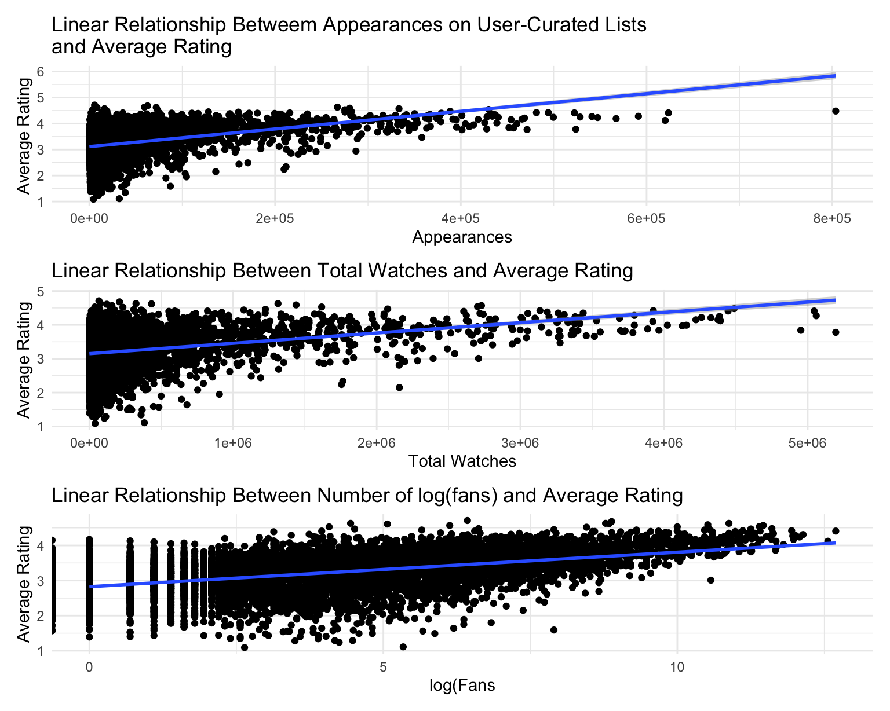
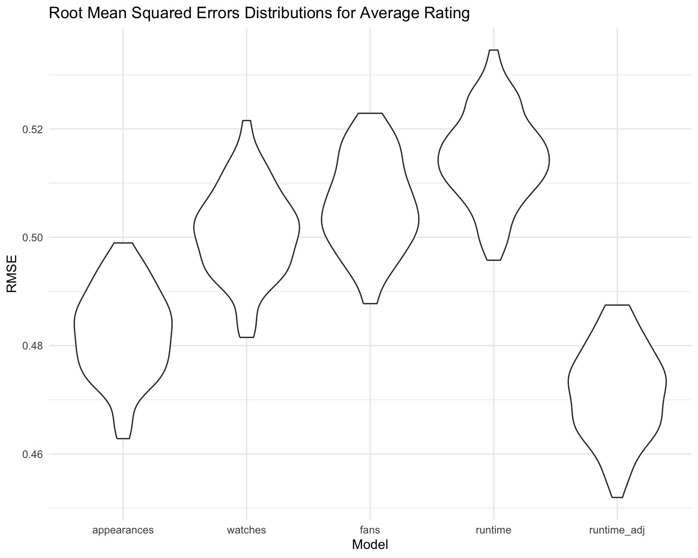

We are a group of passionate movie enthusiasts who are eager to dive into the Letterboxd dataset to uncover fascinating insights about films. In an era dominated by short-form content and claims of shorter attention spans, we are curious to see if shorter movies tend to receive higher ratings. We also want to explore the secret formulas behind top-rated films: Do certain directors excel when they stick to a specific genre or keep their films under 90 minutes? Beyond that, we are excited to analyze trends in genre preferences and discover what kind of film would captivate audiences.
Through our analysis, we are trying to understand what factors contribute to higher ratings of movies. We were initially drawn to this dataset because of the variety of variables it provided. This Letterboxd dataset contained information about movie runtime, movie genre, directors, and a variety of measurements of movie rating and perceived success. We initially were very interested in answering the question of are films directed by more “famous” directors more likely to have higher ratings? And how does genre play into this? Many directors tend to stick to their niche, and we were curious to see how their films performed when they stayed in their niche or not. We also noted that the dataset contained information about film and production studios, and we wanted to know how ratings would change dependent on bigger more well known studies and smaller lesser known ones.
Unfortunately this idea met some challenges. Despite our dataset being robust, variables like genre, studio, and director had multiple entries for each movie and we ran into challenges separating them, and most importantly conducting regression analysis on it. With this in mind, we decided to shift our research question to look more at how certain continuous variables contribute to average rating.
As we did this, we explored how each variable individually was associated with average rating, and shifted our question and curiousity to if these variables together can come together to create a prediction model that is able to accurately estimate the rating of a film based on factors like movie run time, number of watches, the number of times it appears on Letterboxd, and how many watchers identfy as fans of the film.
Across several regression analyses, we wanted to assess how
individual movie characteristics of the model relate to a film’s average
rating on Letterboxd. We first examined runtime as a
predictor and found that longer movies were statistically associated
with higher ratings. However, upon examining the resulting plot, there
was a suggested weak linear trend. Even when applying a
log-transformation or dichotomizing runtime into short
(<100 minutes) and long (≥100 minutes) films, runtime
remained a difficult variable to model on its own. This suggests that,
individually, runtime provides limited insight into what
drives audience reception.
appearances_plot = movie_df |>
ggplot(aes(list_appearances, average_rating)) +
geom_point() +
geom_smooth(method = "lm", se = TRUE) +
labs(
x = "Appearances",
y = "Average Rating",
title = "Linear Relationship Betweem Appearances on User-Curated Lists
and Average Rating"
)
watches_plot = movie_df |>
ggplot(aes(watches, average_rating)) +
geom_point() +
geom_smooth(method = "lm", se = TRUE) +
labs(
x = "Total Watches",
y = "Average Rating",
title = "Linear Relationship Between Total Watches and Average Rating"
)
fans_plot = movie_df |>
ggplot(aes(log(fans), average_rating)) +
geom_point() +
geom_smooth(method = "lm", se = TRUE) +
labs(
x = "log(Fans",
y = "Average Rating",
title = "Linear Relationship Between Number of log(fans) and Average Rating"
)
appearances_plot / watches_plot / fans_plot
Next, we explored alternative predictors that reflect audience
engagement, appearances on user-curated lists
list_appearances, total watches, and number of
fans. All three variables were highly statistically
significant predictors of average rating and were driven by the very
large sample size. Effect sizes also varied, with appearances in
user-curated lists explaining the greatest proportion of variation in
ratings (R² ≈ 0.15), followed by total watches (R² ≈ 0.083) and fans (R²
≈ 0.068). These findings indicate movies that are more widely circulated
and recommended within the platform tend to earn higher ratings which is
possibly due to how many platforms make individualized recommendations
for its viewers.
runtime_adj_model = lm(
average_rating ~ runtime + watches + list_appearances + fans,
data = movie_df
)
runtime_adj_model |>
broom::tidy() |>
select(term, estimate, p.value) |>
mutate(p.value = formatC(p.value, format = "e", digits = 3)) |>
knitr::kable()| term | estimate | p.value |
|---|---|---|
| (Intercept) | 2.9416732 | 0.000e+00 |
| runtime | 0.0015765 | 7.893e-27 |
| watches | -0.0000004 | 4.771e-60 |
| list_appearances | 0.0000068 | 3.781e-168 |
| fans | -0.0000023 | 3.054e-03 |
runtime_model = lm(average_rating ~ runtime, data = movie_df)
appearances_model = lm(average_rating ~ list_appearances, data = movie_df)
watches_model = lm(average_rating ~ watches, data = movie_df)
fans_model = lm(average_rating ~ fans, data = movie_df)
runtime_adj_model = lm(
average_rating ~ runtime + watches + list_appearances + fans,
data = movie_df
)
r2_table = tibble(
r2_model = c("Runtime", "Appearances in User-Curated Lists", "Watches", "Fans", "Runtime (adjusted)"),
r2 = c(summary(runtime_model)$r.squared,
summary(appearances_model)$r.squared,
summary(watches_model)$r.squared,
summary(fans_model)$r.squared,
summary(runtime_adj_model)$r.squared
))
knitr::kable(r2_table, digits = 4)| r2_model | r2 |
|---|---|
| Runtime | 0.0324 |
| Appearances in User-Curated Lists | 0.1505 |
| Watches | 0.0829 |
| Fans | 0.0683 |
| Runtime (adjusted) | 0.1906 |
Finally, incorporating multiple predictors into an adjusted model resulted in improved model performance, with the adjusted runtime model explaining approximately 19% of the variance in average ratings, the strongest result among all models evaluated.
cv2_df =
crossv_mc(movie_df, 100)
cv2_df = cv2_df %>%
mutate(
appearances_mod = map(.x = train, ~lm(average_rating ~ list_appearances, data = .x)),
watches_mod = map(.x = train, ~lm(average_rating ~ watches, data = .x)),
fans_mod = map(.x = train, ~lm(average_rating ~ fans, data = .x)),
runtime_mod = map(.x = train, ~lm(average_rating ~ runtime, data = .x)),
runtime_adj_mod = map(.x = train, ~lm(
average_rating ~ runtime + watches + list_appearances + fans,
data = .x))
) |>
mutate(
rmse_appearances = map2_dbl(.x = appearances_mod, .y = test, ~rmse(model = .x, data = .y)),
rmse_watches = map2_dbl(.x = watches_mod, .y = test, ~rmse(model = .x, data = .y)),
rmse_fans = map2_dbl(.x = fans_mod, .y = test, ~rmse(model = .x, data = .y)),
rmse_runtime = map2_dbl(.x = runtime_mod, .y = test, ~rmse(model = .x, data = .y)),
rmse_runtime_adj = map2_dbl(.x = runtime_adj_mod, .y = test, ~rmse(model = .x, data = .y))
)
cv2_df |>
select(starts_with("rmse")) |>
pivot_longer(
everything(),
names_to = "model",
values_to = "rmse",
names_prefix = "rmse_") |>
mutate(model = fct_inorder(model)) |>
ggplot(aes(x = model, y = rmse)) + geom_violin() +
labs(
x = "Model",
y = "RMSE",
title = "Root Mean Squared Errors Distributions for Average Rating"
)
Cross-validation further supported this conclusion, as the
covariate-adjusted runtime model yielded the lowest RMSE. This indicated
the highest predictive accuracy. Altogether, while runtime
alone is a weak predictor of perceived movie quality, audience
engagement metrics, particularly curated list appearances, emerge as
more powerful indicators of how viewers rate the movie.
For our additional analyses, our findings suggest that while several
characteristics are statistically associated with a movie’s rating,
runtime alone showed a significant but very weak
association with higher ratings and lacked a clearly linear visual
pattern. In contrast, appearances on user-curated lists
list_appearances, total watches, and
fans all explained a much greater share of the variance,
suggesting that movies with higher visibility and stronger community
traction tend to receive higher ratings. The adjusted model that
combined all the variables mentioned performed the best, which supports
our idea that the more popular a film is the better ratings it will
have.
However, our analysis has limitations which include effect sizes being on the smaller side and statistical significance being driven by a large sample size. There is the possibility that these predictors may be a source of multicollinearity with underlying factors such as genre, marketing, or release year, and the dataset includes only English-language films. All these factors limit generalizability across global cinema and other genres of media. Future work could incorporate additional film attributes and nonlinear modeling techniques to better capture what contributes to audience reception and rating behavior.
=======